まず、今日の結論
AIは「何でも正しい答えを出す魔法」ではなく、文章作成・整理・画像生成・業務補助を一緒に行うアシスタント。 頼み方で答えは変わるし、間違うこともある。だから「AIに下書きを作ってもらい、最後は人間が確認する」が基本です。
① AIの基本 ＋ 生成AI
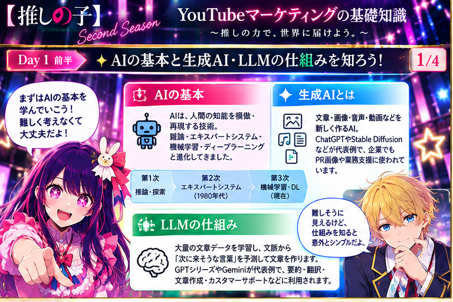
AIは、人間の知能をまねして「判断・予測・分類・文章作成」などを手伝う技術です。現在よく使われているのは、何でもできるAIというより、特定の作業が得意なAIです。
「AI＝ロボット」じゃないよ。文章を書いたり画像を作ったりするAIもあるんだね！
② LLMはどうやって文章を作る？
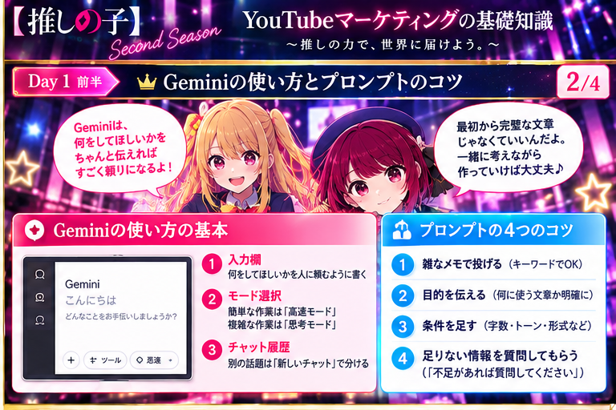
LLMは、大量の文章を学習して、文脈から「次に来そうな言葉」を予測しながら文章を作ります。GPTシリーズやGeminiが代表例です。
だから、自然な文章でも間違うことがある。数字や法律など大事な内容は確認が必要だ。
③ Geminiの基本 ＋ プロンプト4つのコツ
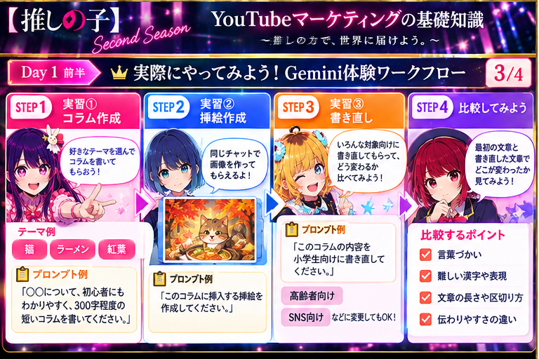
検索みたいに単語を並べるより、「何をしてほしいか」を人に頼むように伝えます。最初から完璧な文章を書く必要はありません。
「もっと短く」「やさしい言葉で」って追加で言えばいいよ。最初から100点の指示なんていらない！
④ 実用的な使い方・注意点・これからのAI
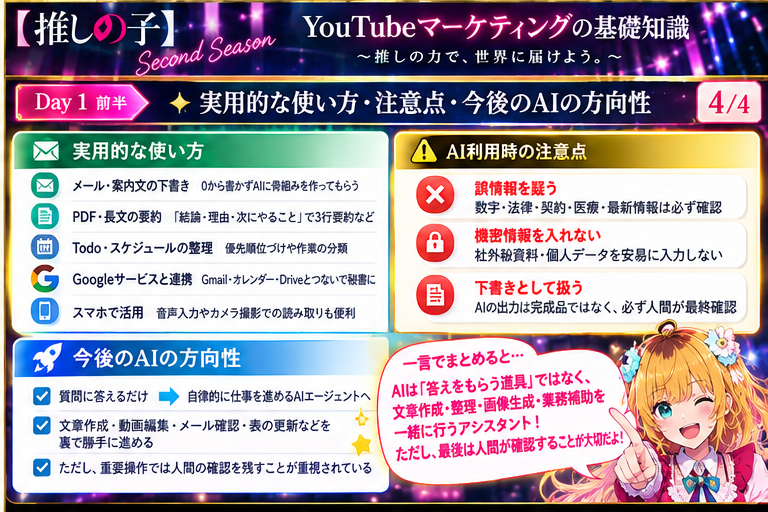
注意：AIの回答は鵜呑みにしない。機密情報や個人情報を安易に入れない。完成品ではなく「下書き」として使い、最後は人が確認します。
これからはAIが裏で作業を進める「AIエージェント」も増える。でも重要な操作は人間が確認する考え方が大事だね。
実習① 準備 ＋ コラム作成
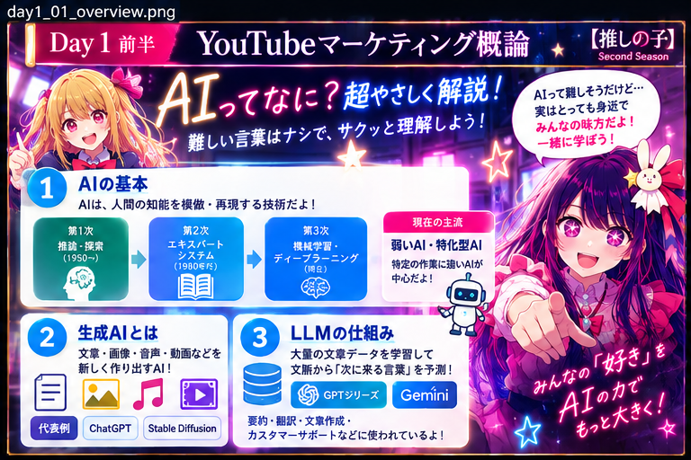
GoogleアカウントでGeminiにログイン。テーマを「猫」「ラーメン」「紅葉」などから1つ選び、プロンプトをコピー＆貼り付けします。無料プランでは画像生成回数に上限がある点も覚えておきます。
まずはコピペでいい！「猫について、初心者向けに300字くらいで」と頼んでみよう。
実習② 同じチャットで挿絵を作る
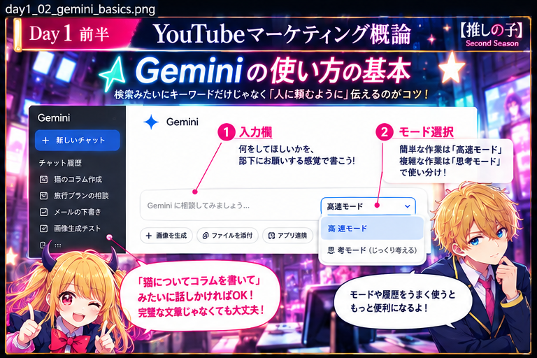
同じチャットのまま「画像を作成」を選び、「このコラムに挿入する挿絵を作成してください」と頼みます。前のコラム内容を踏まえた画像になるか見てみます。
実習③ 同じ文章を別の人向けに書き直す
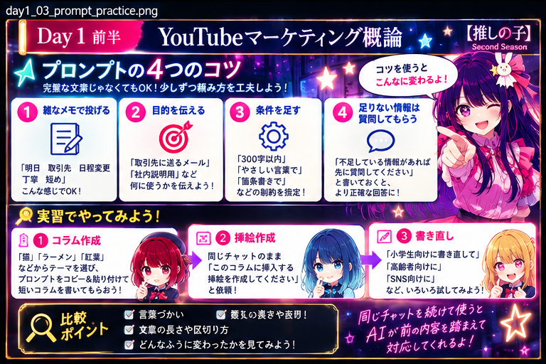
「コラムの内容を小学生向けに書き直してください」と依頼します。「高齢者向け」「SNS向け」「もっと短く」などへ変えてもOKです。
誰向けかを変えるだけで、言葉づかいや文章の長さが変わる。そこを見比べて。
実習④ 最初と書き直した文章を比べる
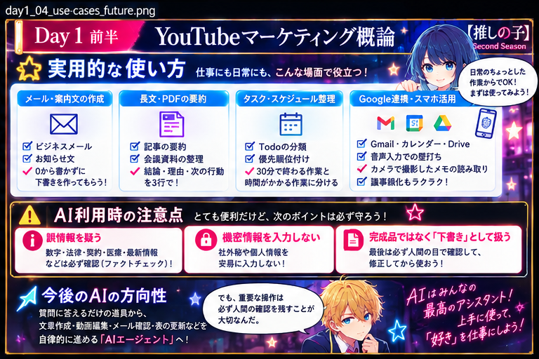
ここが一番大事：頼み方を変えるとAIの答えも変わります。結果を見ながら「もっと短く」「やさしい言葉で」と追加でお願いすると、希望に近づけられます。同じチャットを続けると、前の内容を踏まえて対応しやすくなります。
Day1前半の参考動画 5本
AIとは？ 基礎：https://www.youtube.com/watch?v=WJ1R3D0ntf8&list=PLFnwYI-iUeuI生成AIとは？：https://www.youtube.com/watch?v=KUNBWh9rprI&list=PLFnwYI-iUeuI&index=2LLMとは？：https://www.youtube.com/watch?v=YYx0zrIYS2o&list=PLFnwYI-iUeuI&index=3Gemini入門：https://www.youtube.com/watch?v=ckE0WoKYBmc&list=PLFnwYI-iUeuI&index=4Gemini最新機能：https://www.youtube.com/watch?v=bpPNiRsEPOk&list=PLFnwYI-iUeuI&index=5後半の結論：YouTubeは「たくさん出す競争」だけじゃない
今回の3本の動画では、初心者でも 「誰に何を届けるか」「信頼をどう作るか」「次も見てもらうにはどうするか」 を考えて運営することが大切だ、と説明されています。 バズ（一気に再生数が増えること）だけではなく、 リピーター（また見に来る人）や問い合わせにつながる流れを見る、という考え方です。
① 後発・初心者でもチャンスがある、という考え方
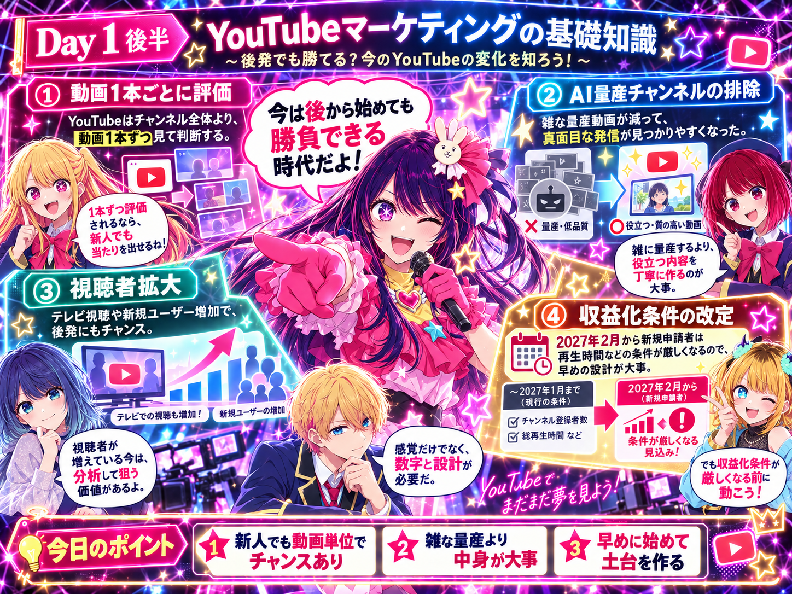
1本目の動画では、今のYouTubeは「昔から運営しているチャンネルだから必ず有利」というより、 動画1本ごとの反応も重視されるため、新しい発信者にもチャンスがある、と説明されています。
「今から始めても遅い」って決めつけなくていいんだね。1本ずつちゃんと作れば勝負できる！
ただし「1本目を完璧にするまで出さない」では止まる。設計は丁寧に、公開後は数字を見て改善する。
② 企業YouTubeは「バズ」より「信頼と問い合わせ」
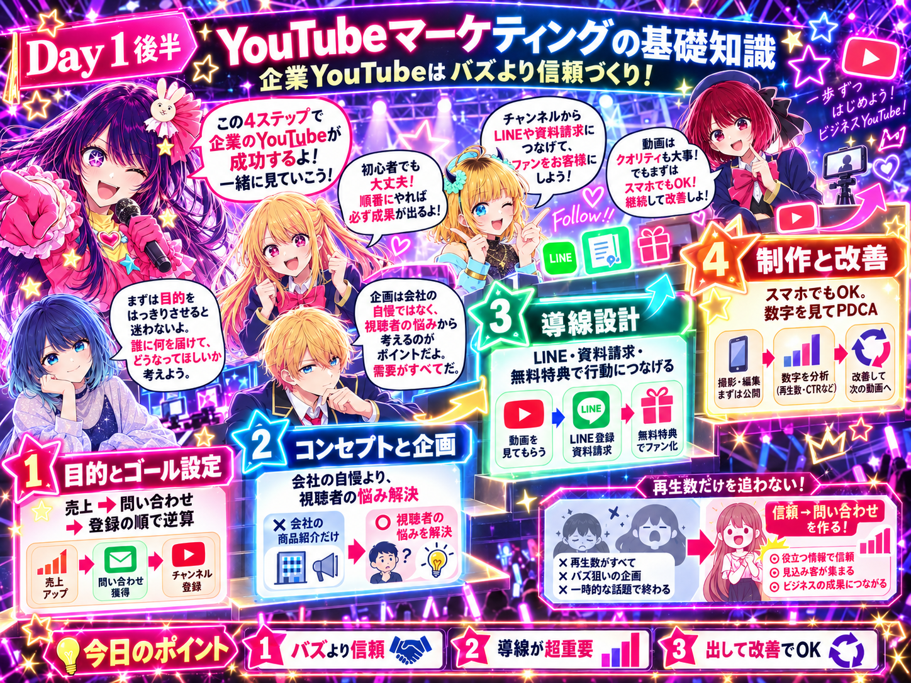
企業や仕事で使うYouTubeは、100万回再生を目標にする必要はありません。 商品やサービスを本当に必要としている人に見てもらい、安心して相談してもらうことが大切です。
「見て終わり」にしないことね。資料、相談、次の動画……次に何をしてほしいかを分かりやすく出す。
再生数だけじゃなく「押された？」「見続けた？」「問い合わせにつながった？」を分けて見ると原因が分かるよ。
③ 再生数だけでなく「また見る人」を増やす
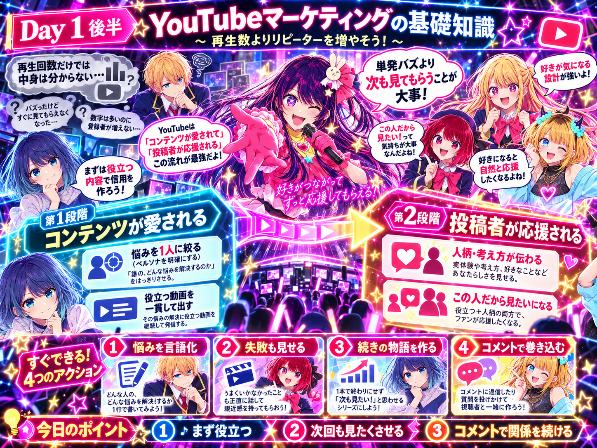
3本目の動画では、単発の大ヒットを追い続けるより、 「次の動画も見る」「過去の動画も見る」人を少しずつ増やす方が、 長く続くチャンネルになると説明されています。
最初から自分語り全開じゃなくてOK！まず「見た人の役に立つ」が入口だよ♪
失敗や迷い、どう直したかも見せると、人間味が出て「また見たい」につながりやすいね。
④ 3本をまとめると「誰に・何を・どう続けるか」
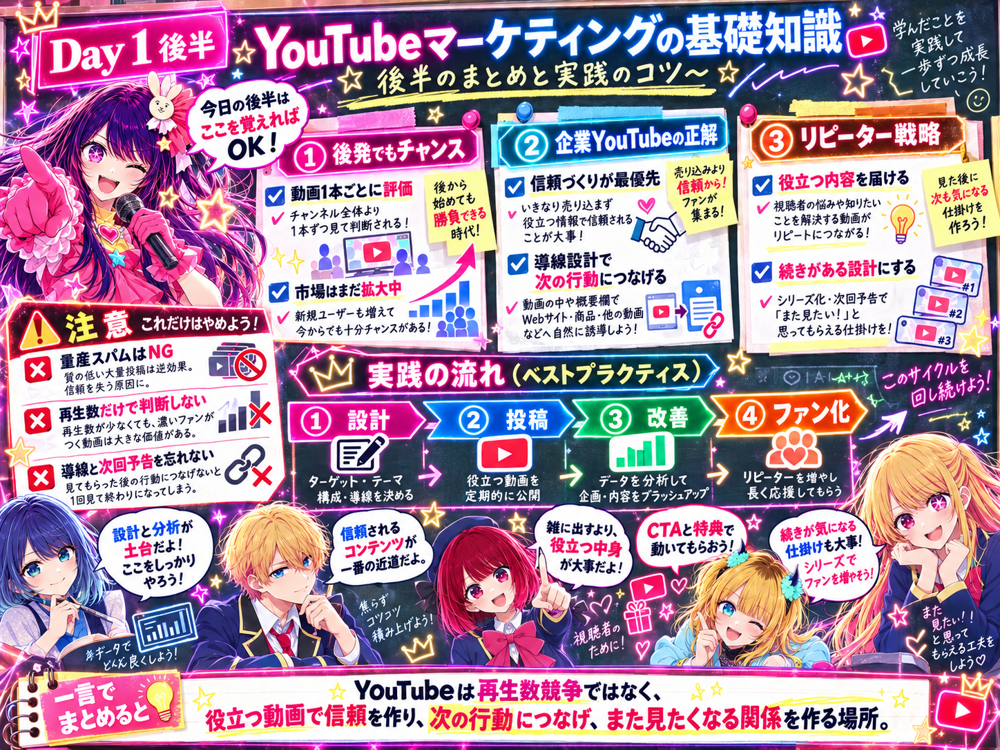
難しく考えなくて大丈夫。 最初にこの4つだけ決めれば、運営がかなり迷いにくくなります。
設計は丁寧に。ただし撮影機材や編集を豪華にしすぎて止まる必要はない。出して、数字を見て、直す。
「100本出さなきゃ！」じゃなくて「次も見たい1本を積み上げる！」って覚えればいいね。
実習① Chromeを開いて、2画面にする
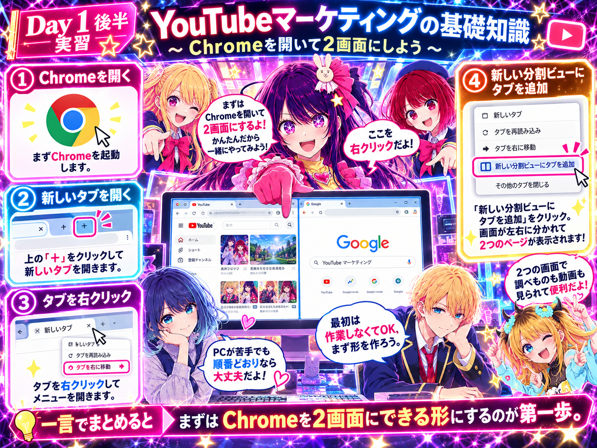
まずChromeブラウザを開きます。新しいタブを作り、タブを右クリックして「新しい分割ビューにタブを追加」を選びます。
ここは準備だけ！難しい作業はまだしないから、順番どおりで大丈夫。
実習② 左にワークフロー、右にGemini
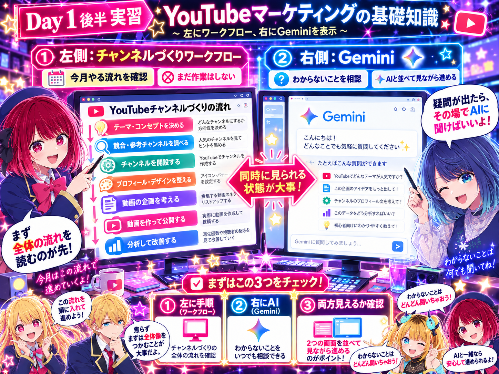
左側に「チャンネルづくりワークフロー」を表示し、右側にGeminiを開きます。 左＝作業の地図、右＝分からないことを聞くAIと考えると分かりやすいです。
片方だけを何度も行ったり来たりするより、2画面で並べた方が迷いにくいね。
実習③ 今日は「作る」より、まず読む・メモする
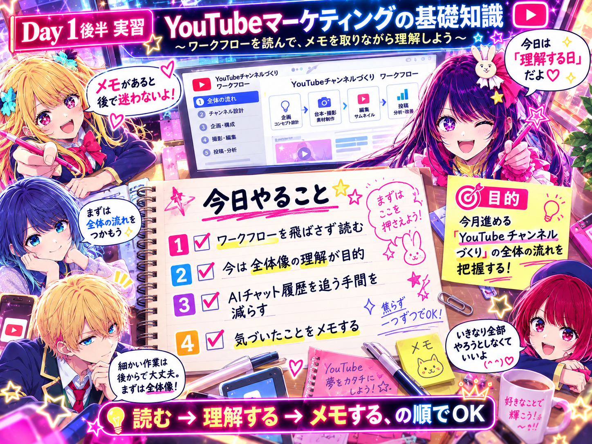
この段階では、チャンネルを完成させる必要はありません。 ワークフローを飛ばさず順番に読み、「今月はこういう順番で進むんだ」と全体像をつかみます。
チャット履歴をずーっと遡るより、ノートに短く書いとくと次がラクだよ！
実習④ 今日の実習を一言でまとめる
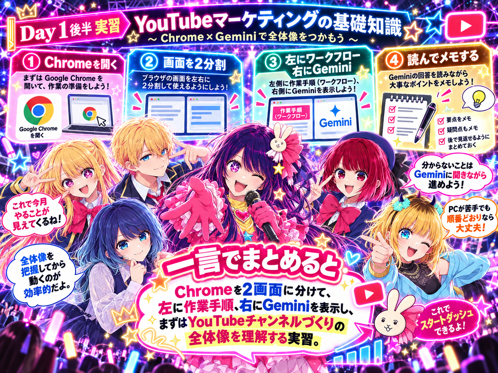
Chromeを2画面に分けて、左に作業手順、右にGeminiを表示し、 まずYouTubeチャンネルづくりの全体の流れを理解する。 これが今日の実習です。
今日は「完成させる日」じゃないの。次から迷わないように地図を見る日。それで十分。